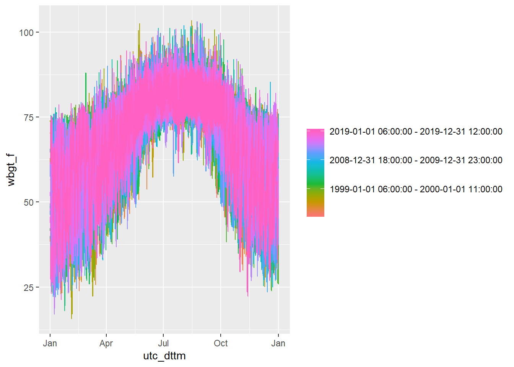
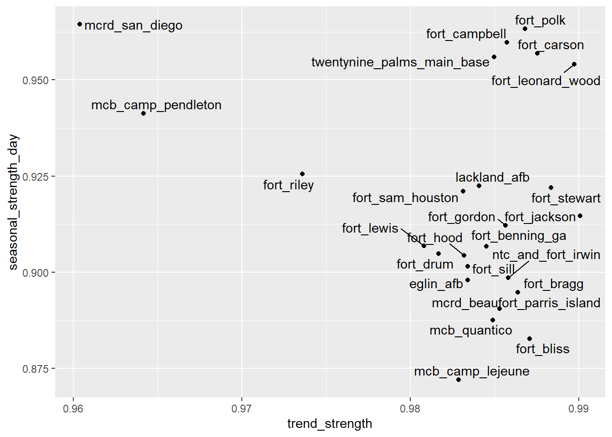
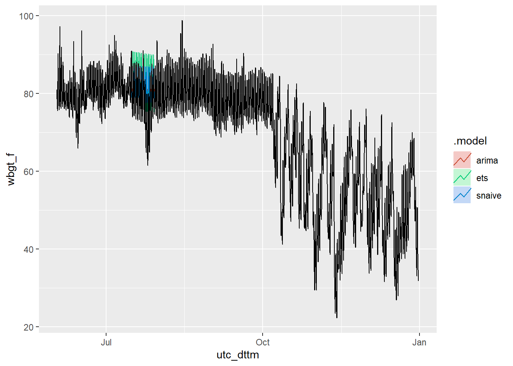

“The R package fable provides a collection of commonly used univariate and multivariate time series forecasting models including exponential smoothing via state space models and automatic ARIMA modelling. These models work within the fable framework, which provides the tools to evaluate, visualise, and combine models in a workflow consistent with the tidyverse.” http://fable.tidyverts.org/
nldas_wide <- read_rds("data/nldas_wide.rds") tsibble objectnldas_tsibble <-
nldas_wide %>%
dplyr::select(installation, utc_dttm, tmp_f, heat_index, wbgt_f) %>%
tsibble::as_tsibble(., key = installation, index = utc_dttm)
nldas_tsibble ## # A tsibble: 6,573,925 x 5 [1h] <UTC>
## # Key: installation [25]
## installation utc_dttm tmp_f heat_index wbgt_f
## <chr> <dttm> <dbl> <dbl> <dbl>
## 1 eglin_afb 1990-01-01 00:00:00 64.1 64.6 62.9
## 2 eglin_afb 1990-01-01 01:00:00 62.5 62.8 61.3
## 3 eglin_afb 1990-01-01 02:00:00 60.9 61.0 59.6
## 4 eglin_afb 1990-01-01 03:00:00 59.3 59.2 57.8
## 5 eglin_afb 1990-01-01 04:00:00 57.8 57.5 56.4
## 6 eglin_afb 1990-01-01 05:00:00 56.2 55.8 54.8
## 7 eglin_afb 1990-01-01 06:00:00 54.7 54.1 53.2
## 8 eglin_afb 1990-01-01 07:00:00 53.2 52.4 51.5
## 9 eglin_afb 1990-01-01 08:00:00 51.8 50.7 49.8
## 10 eglin_afb 1990-01-01 09:00:00 50.4 49 48.0
## # ... with 6,573,915 more rows# Season plot (by year)
nldas_tsibble %>%
filter(installation == "eglin_afb") %>%
feasts::gg_season(wbgt_f, max_col = 30)
# STL decomposition
nldas_tsibble %>%
filter(installation == "eglin_afb") %>%
feasts::STL(wbgt_f)## # A dable: 262,957 x 9 [1h] <UTC>
## # Key: installation [1]
## # STL Decomposition: wbgt_f = trend + season_year + season_week + season_day +
## # remainder
## installation utc_dttm wbgt_f trend season_year season_week
## <chr> <dttm> <dbl> <dbl> <dbl> <dbl>
## 1 eglin_afb 1990-01-01 00:00:00 62.9 65.0 -10.4 -0.515
## 2 eglin_afb 1990-01-01 01:00:00 61.3 65.0 -10.5 -1.66
## 3 eglin_afb 1990-01-01 02:00:00 59.6 64.9 -10.6 -2.91
## 4 eglin_afb 1990-01-01 03:00:00 57.8 64.8 -10.8 -3.94
## 5 eglin_afb 1990-01-01 04:00:00 56.4 64.7 -11.1 -4.46
## 6 eglin_afb 1990-01-01 05:00:00 54.8 64.6 -11.6 -4.68
## 7 eglin_afb 1990-01-01 06:00:00 53.2 64.5 -11.9 -5.12
## 8 eglin_afb 1990-01-01 07:00:00 51.5 64.4 -11.8 -6.38
## 9 eglin_afb 1990-01-01 08:00:00 49.8 64.3 -11.4 -7.86
## 10 eglin_afb 1990-01-01 09:00:00 48.0 64.2 -11.3 -9.10
## # ... with 262,947 more rows, and 3 more variables: season_day <dbl>,
## # remainder <dbl>, season_adjust <dbl>nldas_tsibble %>%
filter(installation == "eglin_afb") %>%
feasts::STL(wbgt_f) %>%
autoplot()nldas_tsibble %>%
features(wbgt_f, feat_stl) ## # A tibble: 25 x 8
## installation trend_strength seasonal_streng~ spikiness linearity curvature
## <chr> <dbl> <dbl> <dbl> <dbl> <dbl>
## 1 eglin_afb 0.983 0.898 5.93e-10 174. 111.
## 2 fort_bennin~ 0.985 0.907 7.64e-10 240. 235.
## 3 fort_bliss 0.987 0.883 8.51e-10 336. 72.5
## 4 fort_bragg 0.986 0.895 9.33e-10 223. 119.
## 5 fort_campbe~ 0.986 0.960 4.85e-10 173. 172.
## 6 fort_carson 0.988 0.957 4.94e-10 173. 204.
## 7 fort_drum 0.982 0.905 7.40e-10 189. 308.
## 8 fort_gordon 0.986 0.912 7.55e-10 79.1 -3.61
## 9 fort_hood 0.983 0.904 9.69e-10 114. 50.9
## 10 fort_jackson 0.990 0.915 7.94e-10 336. 234.
## # ... with 15 more rows, and 2 more variables: seasonal_peak_day <dbl>,
## # seasonal_trough_day <dbl>nldas_tsibble %>%
features(wbgt_f, feat_stl) %>%
ggplot(aes(x = trend_strength, y = seasonal_strength_day, label = installation)) +
geom_point() +
ggrepel::geom_text_repel()
Transformations
nldas_tsibble %>%
filter(installation == "eglin_afb") %>%
ggplot() +
geom_histogram(mapping = aes(x = wbgt_f), binwidth = 0.5)# Log transformation
nldas_tsibble %>%
filter(installation == "eglin_afb") %>%
ggplot() +
geom_histogram(mapping = aes(x = log(wbgt_f)), binwidth = 0.025)# Box-Cox transformation
nldas_tsibble %>%
filter(installation == "eglin_afb") %>%
features(wbgt_f, guerrero)## # A tibble: 1 x 2
## installation lambda_guerrero
## <chr> <dbl>
## 1 eglin_afb 2.00nldas_tsibble %>%
filter(installation == "eglin_afb") %>%
ggplot() +
geom_histogram(mapping = aes(x = BoxCox(wbgt_f, lambda = 2)), binwidth = 5)Models
nldas_fable_models <-
nldas_tsibble %>%
filter(installation == "eglin_afb") %>%
model(
ets = ETS(box_cox(wbgt_f, lambda = 2)),
arima = ARIMA(wbgt_f),
snaive = SNAIVE(wbgt_f))
nldas_fable_models
#write_rds(nldas_fable_models, path = "data/nldas_fable_models.rds")Plot
nldas_fable_models <-
read_rds("data/nldas_fable_models.rds")
nldas_fable_models## # A mable: 1 x 4
## # Key: installation [1]
## installation ets arima snaive
## <chr> <model> <model> <model>
## 1 eglin_afb <ETS(A,N,A)> <ARIMA(3,0,1)(2,1,0)[24]> <SNAIVE>nldas_fable_models %>%
forecast(h = 336) %>%
autoplot(dplyr::filter(.data = nldas_tsibble, lubridate::date(utc_dttm) > "2019-06-01"), level = NULL)